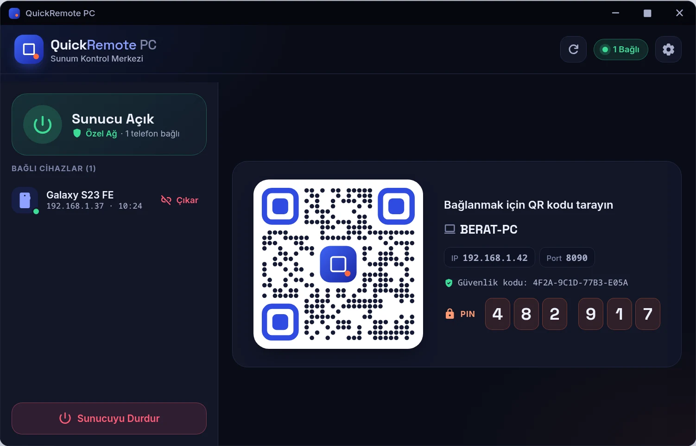
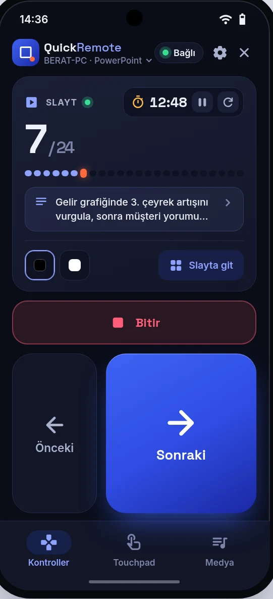
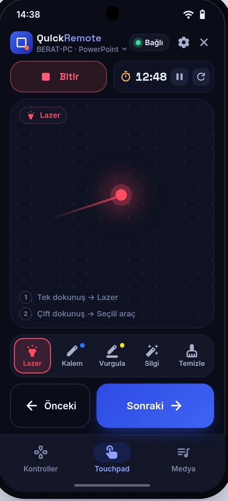
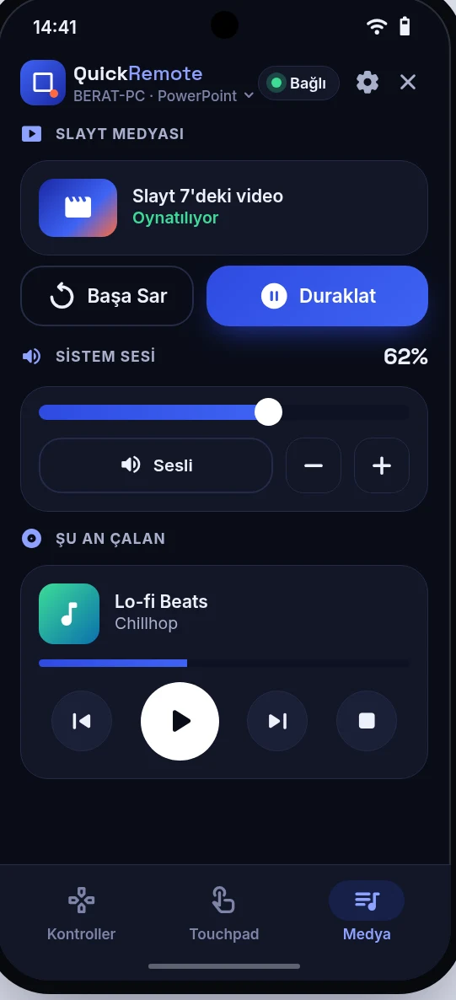
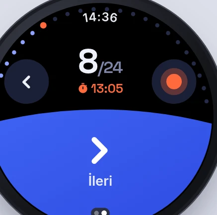
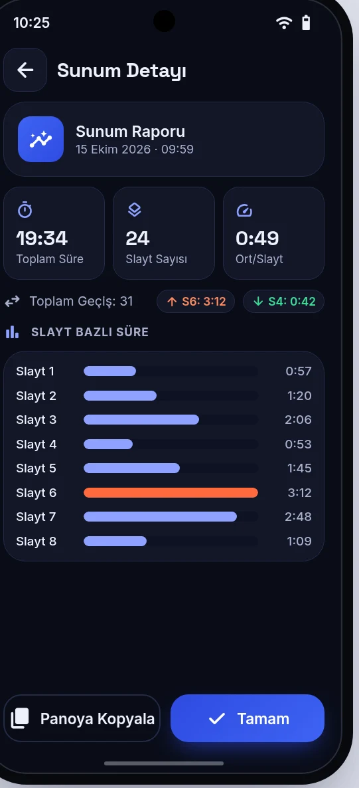

QuickRemote turns your Android phone into the remote, touchpad and laser for your talk. It works with PowerPoint, Impress, WPS and PDF, and runs from a Wear OS watch too.
Open QuickRemote PC and scan the QR code with your phone. The code also carries the computer’s certificate, so the phone knows it reached the right machine.
Or find the computer on the network, or type its IP and PIN. Without Wi-Fi the phone becomes the computer’s Bluetooth keyboard and mouse: nothing to install, but no slide number and no notes.

Eyes on the room, notes in your pocket.



The biggest key is Next.
You press it without looking. Slide number, speaker note and timer share the screen; the presenter view shows the next slide and your full notes.
Slide pictures show the slide as saved, without the animation step or ink. In a full-screen show the current slide shows what is on screen.
The screen becomes a touchpad.
Slide your finger and the laser moves on the screen. Double-tap and draw over the slide with the pen or highlighter you picked. Colors are chosen on the phone.
The sound is at hand too.
Play the video on the slide, turn the computer’s volume down, stop the music that is playing. No walk back to the computer.
The laser does not stop at the slide.
QuickRemote PC draws a see-through layer above every window. Clicks pass through and it never takes the focus. The laser, spotlight and pen work over a video, in a PDF, in a browser and outside a slideshow. Try it below.
Quarterly report.pdfQuarter results
Lesson 3 - Google SlidesHow do volcanoes form?
Plates part, magma rises, the crust splits.
The video on the slide
You choose who draws: on Automatic, PowerPoint and WPS keep their own laser and pen; in Impress, PDFs, browsers and outside a show the layer draws.
Windows also has a magnifier. On Linux the layer needs X11 or XWayland and a compositor. Two monitors and scales other than 125% are not tried yet.
Leave the phone in your pocket.
Turn the bezel and the slide moves.
Hold Next and your finger is the laser.

Time warnings vibrate on your wrist.
The watch pairs with nothing. It uses the phone’s connection.
Wear OS 3 and up. Tried on a Galaxy Watch 6.
With whatever you present from.
Windows. Slide number, notes, slide picture, the program’s own laser and pen, the video on the slide: all of it works.
Linux. QuickRemote’s layer draws the laser and pen, so they stay above a video. The video on the slide plays and pauses. It also turns a PDF open in LibreOffice into a presentation.
Windows, Linux. Full control on Windows; the video only plays and pauses. On Linux, a talk opened with “Open presentation with WPS” gets full control; in a WPS you opened yourself the keys work while its window is in front, and “Take over” brings it under full control.
Windows, Linux. In Acrobat, SumatraPDF, WPS PDF and browsers, Start opens full screen and the pages turn; the layer draws the laser and pen. Okular’s keys are written but not tried yet. No slide number and no notes.
PowerPoint web, Google Slides. Told by the window’s title; Start opens the show, and go to slide works in Google Slides too. Tried in Chrome and in Firefox on Linux; Edge, Firefox on Windows and Bluetooth are not tried yet.
Open the full table
Features by program in Wi-Fi mode, with the PC’s Laser setting on Automatic
Windows
Linux
Windows and Linux
PowerPoint
WPS
Impress
WPSopened from QuickRemote
WPSopened by you
PDF
Slides in a browserPowerPoint web, Google Slides
Next, previous
Works
Works
Works
Works
Partly
Works
Works
Start, end
Works
Works
Works
Works
Partly
Works
Works
Go to slide
Works
Works
Works
Works
No
No
Partly
Laser
Works
Works
Works
Partly
Partly
Works
Works
Pen, highlighter
Works
Works
Works
Partly
Partly
Works
Works
Eraser
Works
Works
Works
Works
Partly
Works
Works
Black, white screen
Works
Works
Works
Works
Partly
Works
Works
Slide number, notes
Works
Works
Works
Works
No
No
No
Slide picture
Works
Partly
Works
Works
Partly
Partly
Partly
Video on the slide
Works
Partly
Partly
No
No
No
No
Volume, media
Works
Works
Works
Works
Works
Works
Works
Works WorksPartly PartlyNo NoWi-Fi mode, the PC’s Laser setting on Automatic.
No account.No cloud.Your commands stay in the room.
Local network only Outside addresses are refused before encryption even starts.
TLS Every command is encrypted, and the PIN travels inside that channel.
Certificate The QR code carries its fingerprint. Without one you compare the security code before the PIN is sent.
A 6-digit PIN New at every start. After 5 wrong tries that device waits 60 seconds.
Off the screen When the first phone connects, the QR code and PIN are hidden.
No crash reports or usage statistics are sent, and the error log stays on your device. With the update check on, the PC app asks GitHub for a new version; you can turn that off.
When the lights come up, see where the time went.
Every talk goes into the history: total time, time per slide, the longest and the shortest. Copy the report and prepare for the next one.

What we tried, and what we have not.
QuickRemote is a personal project. We say plainly which features have been tried on a real device.
Tried on real devices
Basic control, notes, black and white screen with PowerPoint and WPS (Windows)
PDF viewers: Acrobat, SumatraPDF, Chrome, Edge, Firefox, WPS PDF (Windows)
Control of Impress and WPS (Linux)
Control and laser from the watch, on a Galaxy Watch 6
Bluetooth keyboard and mouse mode
Partly tried
Laser and ink layer: tried on screen on Linux and Windows 11 (on Windows also the magnifier, the spotlight and the blank screen); over a video, several monitors, other scale settings and GNOME are not tried yet
Slide picture: verified on Windows with PowerPoint and WPS, in a show and outside, and on Linux outside a show; on the phone the card, the go-to-slide grid and the presenter view were tried with PowerPoint
The laser that goes where you touch in the presenter view: tried on Windows with PowerPoint; WPS, Impress and QuickRemote’s layer are not tried yet
The slide picture is the slide as saved: the animation step, drawings and a playing video do not show. In a full-screen show the screen picture does show them.
Written and tested in code, not tried yet
Recognising a PDF in a browser on KDE Wayland
The tray, start at login and the update check
On the phone: app shortcuts and the Quick Settings tile
The Windows installer, the .deb and the AUR package
Full screen with Okular
PowerPoint and Google Slides in a browser: Edge, Firefox on Windows and Bluetooth (tried in Chrome on Windows and Firefox on Linux)
Questions
Do I need the internet?
No. In Wi-Fi mode the phone and computer only need the same network. In Bluetooth mode you do not even need a network.
Do I install anything on the computer?
Wi-Fi mode needs QuickRemote PC. In Bluetooth mode you install nothing; the computer sees the phone as a keyboard.
Does it work with an iPhone or Apple Watch?
Not for now. The remote runs on Android, and the watch app on Wear OS.
Can more than one phone connect?
Yes. The phone that picks up the laser or pen keeps it until its gesture ends. If two people press Next at once, the slide moves once.
Does it drop when the phone locks?
No. While the remote screen is open, the connection carries on in the background even if you lock the phone.
What if something goes wrong?
On the phone: Settings, Help. On the PC: Settings, Troubleshooting. “Report a problem” opens a pre-filled page on GitHub, and you attach the error log yourself.
The first release is on its way.
Ready-made packages are not published yet, so for now it is built from source. When the release is out, the same page will have APKs for the phone and watch, an installer for Windows, and a .deb, a .tar.gz and an AUR package for Linux.